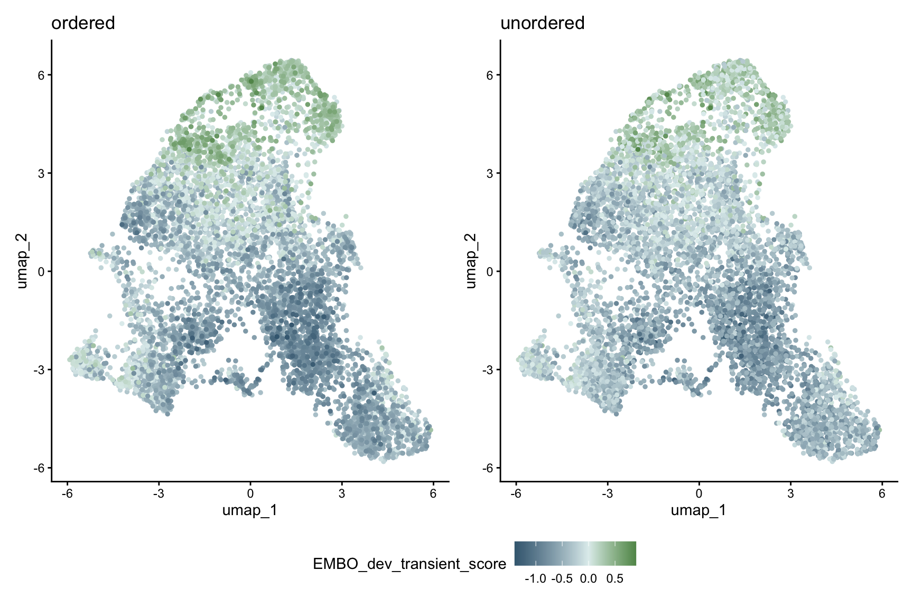
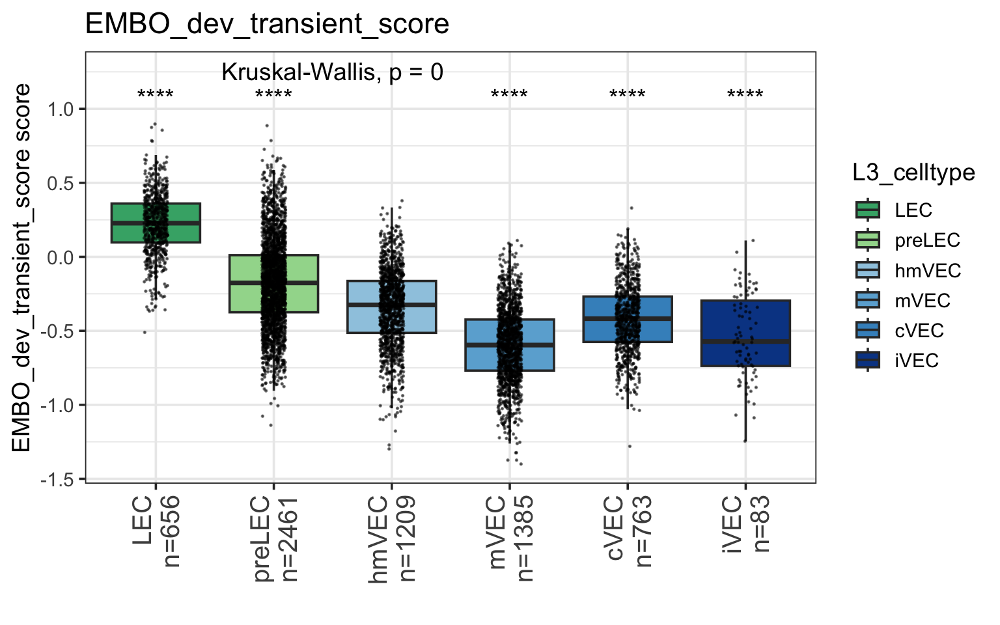
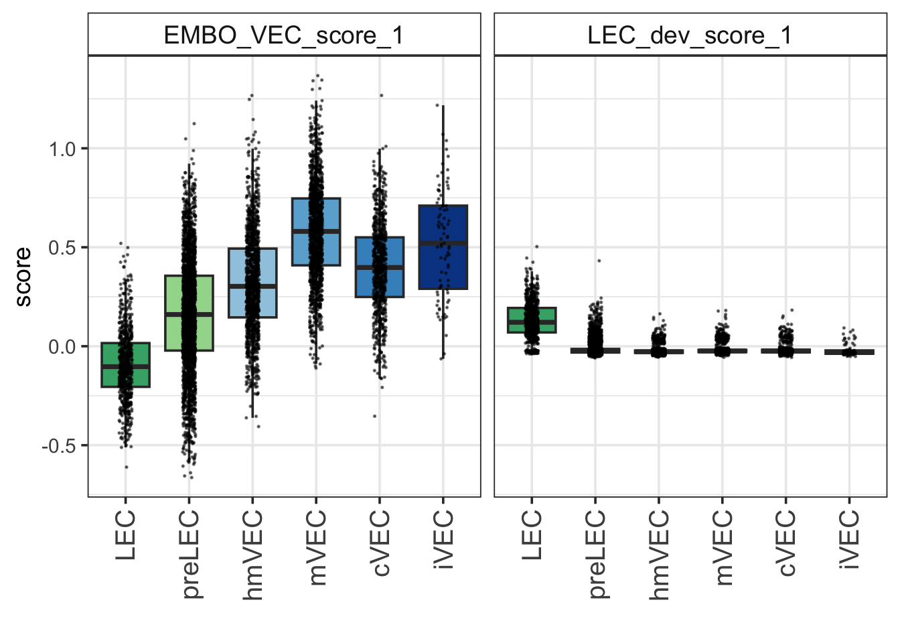
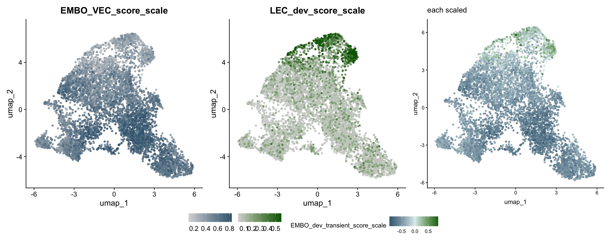
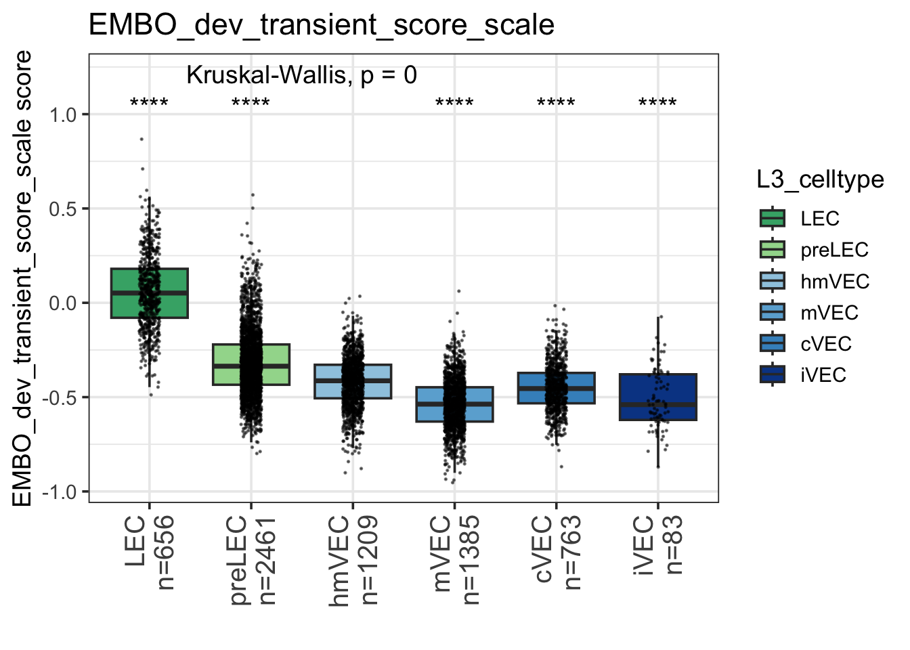
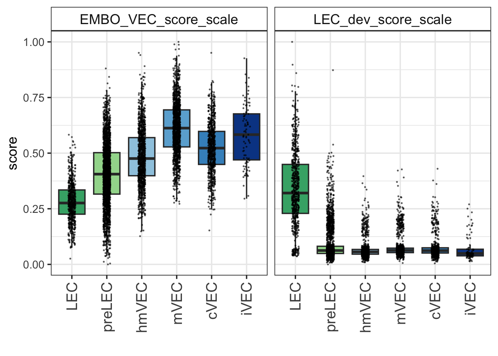

Last updated: 2026-05-18
Checks: 7 0
Knit directory: yap1_meox1_paper/
This reproducible R Markdown analysis was created with workflowr (version 1.7.1). The Checks tab describes the reproducibility checks that were applied when the results were created. The Past versions tab lists the development history.
Great! Since the R Markdown file has been committed to the Git repository, you know the exact version of the code that produced these results.
Great job! The global environment was empty. Objects defined in the global environment can affect the analysis in your R Markdown file in unknown ways. For reproduciblity it’s best to always run the code in an empty environment.
The command set.seed(20260119) was run prior to running
the code in the R Markdown file. Setting a seed ensures that any results
that rely on randomness, e.g. subsampling or permutations, are
reproducible.
Great job! Recording the operating system, R version, and package versions is critical for reproducibility.
Nice! There were no cached chunks for this analysis, so you can be confident that you successfully produced the results during this run.
Great job! Using relative paths to the files within your workflowr project makes it easier to run your code on other machines.
Great! You are using Git for version control. Tracking code development and connecting the code version to the results is critical for reproducibility.
The results in this page were generated with repository version 27ec953. See the Past versions tab to see a history of the changes made to the R Markdown and HTML files.
Note that you need to be careful to ensure that all relevant files for
the analysis have been committed to Git prior to generating the results
(you can use wflow_publish or
wflow_git_commit). workflowr only checks the R Markdown
file, but you know if there are other scripts or data files that it
depends on. Below is the status of the Git repository when the results
were generated:
Ignored files:
Ignored: .DS_Store
Ignored: .Rhistory
Ignored: .Rproj.user/
Ignored: analysis/.DS_Store
Ignored: analysis/figure/
Ignored: code/.DS_Store
Ignored: code/scRNAseq/.DS_Store
Ignored: code/scRNAseq/analysis/.DS_Store
Ignored: code/scRNAseq/pre_processing/.DS_Store
Ignored: code/snATACseq/
Ignored: data/.DS_Store
Ignored: data/genesets/
Ignored: data/input/
Ignored: output/.DS_Store
Ignored: output/analysis/
Ignored: output/data/
Ignored: output/figures/
Ignored: renv/library/
Ignored: renv/staging/
Note that any generated files, e.g. HTML, png, CSS, etc., are not included in this status report because it is ok for generated content to have uncommitted changes.
These are the previous versions of the repository in which changes were
made to the R Markdown
(analysis/exploration_D10025_yap1_dataset_transition_scores.Rmd)
and HTML
(docs/exploration_D10025_yap1_dataset_transition_scores.html)
files. If you’ve configured a remote Git repository (see
?wflow_git_remote), click on the hyperlinks in the table
below to view the files as they were in that past version.
| File | Version | Author | Date | Message |
|---|---|---|---|---|
| Rmd | 27ec953 | Michelle Meier | 2026-05-18 | wflow_publish(c("analysis/exploration_D10025_yap1_dataset_transition_scores.Rmd", |
Explore other options to visualise the VEC -> LEC transition score.
suppressPackageStartupMessages({
library(tidyverse)
library(here)
library(Seurat)
library(scDblFinder)
library(ggpubr)
library(clustree)
library(patchwork)
library(scater)
library(scran)
library(qs2)
library(chisq.posthoc.test)
})# level_01 <- qs_read(here('output/data/Datsets/paper/D10025_yap1_dataset_Level_01_annotated.qs2'))
# level_02 <- qs_read(here('output/data/Datsets/paper/D10025_yap1_dataset_Level_02_annotated.qs2'))
level_03 <- qs_read(here('output/data/Datsets/paper/D10025_yap1_dataset_Level_03_annotated.qs2'))source(here("code/scRNAseq/general_scripts/yap1_meox1_important_genes.R"))
source(here("code/scRNAseq/general_scripts/yap1_meox1_paper_settings.R"))
names(genotype_colours) <- c("wildtype", "yap1_mutant")level_03_celltpe_order <- c(
"LEC",
"preLEC",
"hmVEC",
"mVEC",
"cVEC",
"iVEC"
)level_03_celltype_colours <- c(
"#41ae76",
"#a1d99b",
"#9ecae1",
"#6baed6",
"#4292c6",
"#084594")
names(level_03_celltype_colours) <- level_03_celltpe_orderplot_sizing <- theme_bw()+ theme(axis.title = element_text(size = 16),
axis.text = element_text(size = 14, colour = "black"),
plot.title = element_text(size = 18),
legend.text = element_text(size = 14),
legend.title = element_blank())
plot_sizing_seurat <- theme(axis.title = element_text(size = 16),
axis.text = element_text(size = 14, colour = "black"),
plot.title = element_text(size = 18),
legend.text = element_text(size = 14))
rotate_x <- theme(axis.text.x = element_text(angle = 90, vjust = 0.5, hjust=1))
strip_fix <- theme(strip.background = element_rect(fill = "white"),
strip.text = element_text(size = 14))save_dir <- here("output/explorations")
name <- "yap1_dataset"Focusing only on developmental transition score. This time the focus is not on split by mutant vs wildtype, but just per cluster.
Note, the way we visualise this transition score is inspired by this paper here - we actually use their code.
The way this works is not by scaling the values themselves, but by ordering the scores for colouring:
md <- level_03[[]]
coords <- Embeddings(level_03[["umap"]])
md <- cbind(md, coords)
midpoint <- mean(range(md$EMBO_dev_transient_score)) #-0.2513305
# Order by absolute difference from the midpoint
md_ordered <- md[order(abs(md$EMBO_dev_transient_score - midpoint)), ]The midpoint is {r} midpoint - which means that overall
the VEC scores are larger than the LEC scores. This makes sense
considering we’re looking at mostly VECs at this timepoint and only very
few LECs.
The data is then reordered based on absolute difference from midpoint, but the underlying data is unchanged. This just ensures that the extreme points are plotted last, so they’re visible and not burried.
# plot ordered
p1 <- ggplot(md_ordered, aes(x = umap_1, y = umap_2, color = EMBO_dev_transient_score)) +
geom_point(size = 1) +
scale_color_gradient2(low = "#406880", high = "darkgreen", mid = "azure2") + #not keeping original green bc its too light
theme_classic() + ggtitle("ordered")
# plot unordered
p2 <- ggplot(md, aes(x = umap_1, y = umap_2, color = EMBO_dev_transient_score)) +
geom_point(size = 1) +
scale_color_gradient2(low = "#406880", high = "darkgreen", mid = "azure2") + #not keeping original green bc its too light
theme_classic() + ggtitle("unordered")
p1+p2 + plot_layout(guides="collect") & theme(legend.position = "bottom")
This is how we visualise the data on the UMAPs.
#copied out from function above,
df_in <- level_03@meta.data
score = "EMBO_dev_transient_score"
celltype_order=level_03_celltpe_order
new_labels <- df_in %>%
select(., score, L3_celltype) %>%
mutate(., L3_celltype = factor(L3_celltype, levels = celltype_order)) %>%
group_by(L3_celltype) %>%
summarise(., count = n()) %>%
summarise(., label = paste0(L3_celltype, "\nn=", count)) %>%
pull(label) %>% unique()Warning: Using an external vector in selections was deprecated in tidyselect 1.1.0.
ℹ Please use `all_of()` or `any_of()` instead.
# Was:
data %>% select(score)
# Now:
data %>% select(all_of(score))
See <https://tidyselect.r-lib.org/reference/faq-external-vector.html>.
This warning is displayed once every 8 hours.
Call `lifecycle::last_lifecycle_warnings()` to see where this warning was
generated.Warning: Returning more (or less) than 1 row per `summarise()` group was deprecated in
dplyr 1.1.0.
ℹ Please use `reframe()` instead.
ℹ When switching from `summarise()` to `reframe()`, remember that `reframe()`
always returns an ungrouped data frame and adjust accordingly.
Call `lifecycle::last_lifecycle_warnings()` to see where this warning was
generated.#rename
colnames(df_in)[colnames(df_in) == score] <- "score"
#y limits for test
y_max <- df_in$score %>% max()
y_pairwise <- y_max + (y_max*0.2)
y_global <- y_max + (y_max*0.4)
#get stats
stat_list <- list()
stat_list[["global"]] <- compare_means(score ~ L3_celltype,
data = df_in,
method = "kruskal.test")
stat_list[["pairwise"]] <- compare_means(score ~ L3_celltype, #pairwise compared to hmVEC
ref.group = "hmVEC",
data =df_in,
method = "wilcox.test") %>%
mutate(., sig_sign = case_when(p.adj > 0.05 ~ "ns", #add for adjusted
p.adj <= 0.05 & p.adj > 0.01 ~ "*",
p.adj <= 0.01 & p.adj > 0.001 ~ "**",
p.adj <= 0.001 & p.adj > 0.0001 ~ "***",
p.adj <= 0.0001 ~ "****"))
plot <- df_in %>%
select(., score, L3_celltype) %>%
mutate(., L3_celltype = factor(L3_celltype, levels = celltype_order)) %>%
ggplot(.) +
geom_boxplot(aes(x = L3_celltype, y = score, fill = L3_celltype),
position = position_dodge2(),outlier.shape = NA) +
scale_fill_manual(values = level_03_celltype_colours) +
theme_bw(base_size = 14)+
theme(axis.text.x = element_text(angle = 90, vjust = 0.5, hjust=1, size=15)) +
xlab("") + ylab(paste0(score, " score")) +
geom_jitter(aes(x = L3_celltype, y = score),
size = 0.1, alpha = 0.5,
position = position_jitterdodge(jitter.width = 0.3, dodge.width = 0.75)) +
geom_text(data = stat_list$pairwise, aes(x = group2, y = y_pairwise, label = sig_sign)) +
geom_text(data = stat_list$global, aes(x = 2.5, y = y_global, label = paste0(method, ", p = ", p.adj))) +
scale_x_discrete(labels= new_labels) +
ggtitle(score)
plot 
# filename <- sprintf('%s/%s_module_score_dev_transition_celltype_boxplots_pvalue.pdf', save_dir, name_current)
# ggsave(filename,
# plot,
# device="pdf",
# width=8,
# height=5)Stats as well.
stats_DF <- stat_list %>% bind_rows(., .id="score")
# #also export
# filename <- sprintf("%s/%s_module_score_dev_transition_celltype_boxplots_stats.csv", save_dir, name_current)
# write.csv(x = stats_DF, file = filename, row.names = FALSE)
DT::datatable(stats_DF, class = 'cell-border stripe', rownames = FALSE)Make this plot for each score separately? No stats for now.
df_in <- level_03@meta.data
celltype_order=level_03_celltpe_order
df_in %>%
select(., LEC_dev_score_1,EMBO_VEC_score_1, L3_celltype) %>%
mutate(., L3_celltype = factor(L3_celltype, levels = celltype_order)) %>%
pivot_longer(cols = c("EMBO_VEC_score_1", "LEC_dev_score_1"), names_to = "score", values_to = "value") %>%
ggplot(.) +
geom_boxplot(aes(x = L3_celltype, y = value, fill = L3_celltype),
position = position_dodge2(),outlier.shape = NA) +
scale_fill_manual(values = level_03_celltype_colours) +
theme_bw(base_size = 14)+
theme(axis.text.x = element_text(angle = 90, vjust = 0.5, hjust=1, size=15)) +
xlab("") + ylab("score") +
geom_jitter(aes(x = L3_celltype, y = value),
size = 0.1, alpha = 0.5,
position = position_jitterdodge(jitter.width = 0.3, dodge.width = 0.75)) +
facet_wrap(~score) + strip_fix + theme(legend.position = "none")
Not sure we can make any great statements about the distribution of the LEC scores… They’re all pretty low.
Run stats anyway?
mean_lec_dev_scores <- df_in %>%
group_by(L3_celltype) %>%
summarise(., mean_celltype = mean(LEC_dev_score_1))
pairwise <- compare_means(LEC_dev_score_1 ~ L3_celltype,
# ref.group = "hmVEC",
data =df_in,
method = "wilcox.test") %>%
mutate(., sig_sign = case_when(p.adj > 0.05 ~ "ns", #add for adjusted
p.adj <= 0.05 & p.adj > 0.01 ~ "*",
p.adj <= 0.01 & p.adj > 0.001 ~ "**",
p.adj <= 0.001 & p.adj > 0.0001 ~ "***",
p.adj <= 0.0001 ~ "****")) %>%
left_join(
mean_lec_dev_scores %>%
dplyr::rename(group1 = L3_celltype,
group1_mean = mean_celltype),
by = "group1"
) %>%
left_join(
mean_lec_dev_scores %>%
dplyr::rename(group2 = L3_celltype,
group2_mean = mean_celltype),
by = "group2"
) %>%
relocate(group1_mean, .after = group1) %>%
relocate(group2_mean, .after = group2) %>%
mutate(., direction = ifelse(group1_mean > group2_mean, "up", "down")) %>%
select(., -c(".y.", "p", "p.format", "p.signif", "method"))Show stats for significant entries that are not LEC, because we know that score is higher.
DT::datatable(pairwise %>% filter(., p.adj < 0.05 & group1 != "LEC" & group2 != "LEC"), class = 'cell-border stripe', rownames = FALSE)It actually doesn’t really look like the LEC score is higher in hmVEC clusters compared to other non-LEC clusters.
The main motivator for this is that the scores are pretty arbitrary and the midpoint isn’t 0. This makes it hard to make sense of the numbers. While we probably shouldn’t put too much weight on this anyway, we could explore whether we can scale the LEC and VEC scores to go from 0 to 1 independently. Then, when subtracting, the midpoint around 0 would actually be a proper intermediate. It would also mean that everything >0 had a larger LEC than VEC score, and everything <0 had a larger VEC than LEC score.
level_03$LEC_dev_score_scale <- scales::rescale(level_03$LEC_dev_score_1, to = c(0,1))
level_03$EMBO_VEC_score_scale <- scales::rescale(level_03$EMBO_VEC_score_1, to = c(0,1))
level_03$EMBO_dev_transient_score_scale <- level_03$LEC_dev_score_scale - level_03$EMBO_VEC_score_scaleCheck what these look on UMAP for each score sep as well as transition.
vec <- FeaturePlot(level_03,
features = "EMBO_VEC_score_scale",
cols = c("#d9d9d9", "#406880"), pt.size = 1,
min.cutoff = "q1",
max.cutoff = "q99",
order = T)
lec <- FeaturePlot(level_03,
features = "LEC_dev_score_scale",
cols = c("#d9d9d9", "darkgreen"),pt.size = 1,
min.cutoff = "q1",
max.cutoff = "q99",
order = T)
md <- level_03[[]]
coords <- Embeddings(level_03[["umap"]])
md <- cbind(md, coords)
midpoint <- mean(range(md$EMBO_dev_transient_score_scale))
# Order by absolute difference from the midpoint
md <- md[order(abs(md$EMBO_dev_transient_score_scale - midpoint)), ]
# plot
trans <- ggplot(md, aes(x = umap_1, y = umap_2, color = EMBO_dev_transient_score_scale)) +
geom_point(size = 1) +
scale_color_gradient2(low = "#406880", high = "darkgreen", mid = "azure2") +
theme_classic() + ggtitle("each scaled")
vec + lec + trans + plot_layout(ncol=3, guides = "collect", axes="collect") & theme(legend.position = "bottom")
I think one of the issues is that almost all cells have a VEC signature, but only very few have a LEC signature- but the ones that do have a very strong one.
Make boxplot
#copied out from function above,
df_in <- level_03@meta.data
score = "EMBO_dev_transient_score_scale"
celltype_order=level_03_celltpe_order
new_labels <- df_in %>%
select(., score, L3_celltype) %>%
mutate(., L3_celltype = factor(L3_celltype, levels = celltype_order)) %>%
group_by(L3_celltype) %>%
summarise(., count = n()) %>%
summarise(., label = paste0(L3_celltype, "\nn=", count)) %>%
pull(label) %>% unique()Warning: Returning more (or less) than 1 row per `summarise()` group was deprecated in
dplyr 1.1.0.
ℹ Please use `reframe()` instead.
ℹ When switching from `summarise()` to `reframe()`, remember that `reframe()`
always returns an ungrouped data frame and adjust accordingly.
Call `lifecycle::last_lifecycle_warnings()` to see where this warning was
generated.#rename
colnames(df_in)[colnames(df_in) == score] <- "score"
#y limits for test
y_max <- df_in$score %>% max()
y_pairwise <- y_max + (y_max*0.2)
y_global <- y_max + (y_max*0.4)
#get stats
stat_list <- list()
stat_list[["global"]] <- compare_means(score ~ L3_celltype,
data = df_in,
method = "kruskal.test")
stat_list[["pairwise"]] <- compare_means(score ~ L3_celltype, #pairwise compared to hmVEC
ref.group = "hmVEC",
data =df_in,
method = "wilcox.test") %>%
mutate(., sig_sign = case_when(p.adj > 0.05 ~ "ns", #add for adjusted
p.adj <= 0.05 & p.adj > 0.01 ~ "*",
p.adj <= 0.01 & p.adj > 0.001 ~ "**",
p.adj <= 0.001 & p.adj > 0.0001 ~ "***",
p.adj <= 0.0001 ~ "****"))
plot <- df_in %>%
select(., score, L3_celltype) %>%
mutate(., L3_celltype = factor(L3_celltype, levels = celltype_order)) %>%
ggplot(.) +
geom_boxplot(aes(x = L3_celltype, y = score, fill = L3_celltype),
position = position_dodge2(),outlier.shape = NA) +
scale_fill_manual(values = level_03_celltype_colours) +
theme_bw(base_size = 14)+
theme(axis.text.x = element_text(angle = 90, vjust = 0.5, hjust=1, size=15)) +
xlab("") + ylab(paste0(score, " score")) +
geom_jitter(aes(x = L3_celltype, y = score),
size = 0.1, alpha = 0.5,
position = position_jitterdodge(jitter.width = 0.3, dodge.width = 0.75)) +
geom_text(data = stat_list$pairwise, aes(x = group2, y = y_pairwise, label = sig_sign)) +
geom_text(data = stat_list$global, aes(x = 2.5, y = y_global, label = paste0(method, ", p = ", p.adj))) +
scale_x_discrete(labels= new_labels) +
ggtitle(score)
plot 
# filename <- sprintf('%s/%s_module_score_dev_transition_celltype_boxplots_pvalue.pdf', save_dir, name_current)
# ggsave(filename,
# plot,
# device="pdf",
# width=8,
# height=5)Even the LECs don’t really have a high mean score for this transition score… probably because they all also have a relatively high VEC score.
Plot boxplots without stats for LEC and VEC scores separately.
df_in <- level_03@meta.data
celltype_order=level_03_celltpe_order
df_in %>%
select(., LEC_dev_score_scale,EMBO_VEC_score_scale, L3_celltype) %>%
mutate(., L3_celltype = factor(L3_celltype, levels = celltype_order)) %>%
pivot_longer(cols = c("EMBO_VEC_score_scale", "LEC_dev_score_scale"), names_to = "score", values_to = "value") %>%
ggplot(.) +
geom_boxplot(aes(x = L3_celltype, y = value, fill = L3_celltype),
position = position_dodge2(),outlier.shape = NA) +
scale_fill_manual(values = level_03_celltype_colours) +
theme_bw(base_size = 14)+
theme(axis.text.x = element_text(angle = 90, vjust = 0.5, hjust=1, size=15)) +
xlab("") + ylab("score") +
geom_jitter(aes(x = L3_celltype, y = value),
size = 0.1, alpha = 0.5,
position = position_jitterdodge(jitter.width = 0.3, dodge.width = 0.75)) +
facet_wrap(~score) + strip_fix + theme(legend.position = "none")
sessionInfo()R version 4.5.0 (2025-04-11)
Platform: aarch64-apple-darwin20
Running under: macOS Sequoia 15.7.4
Matrix products: default
BLAS: /Library/Frameworks/R.framework/Versions/4.5-arm64/Resources/lib/libRblas.0.dylib
LAPACK: /Library/Frameworks/R.framework/Versions/4.5-arm64/Resources/lib/libRlapack.dylib; LAPACK version 3.12.1
locale:
[1] en_US.UTF-8/en_US.UTF-8/en_US.UTF-8/C/en_US.UTF-8/en_US.UTF-8
time zone: Australia/Melbourne
tzcode source: internal
attached base packages:
[1] stats4 stats graphics grDevices datasets utils methods
[8] base
other attached packages:
[1] chisq.posthoc.test_0.1.2 qs2_0.1.7
[3] scran_1.38.0 scater_1.38.0
[5] scuttle_1.20.0 patchwork_1.3.2
[7] clustree_0.5.1 ggraph_2.2.2
[9] ggpubr_0.6.2 scDblFinder_1.24.0
[11] SingleCellExperiment_1.32.0 SummarizedExperiment_1.40.0
[13] Biobase_2.70.0 GenomicRanges_1.62.1
[15] Seqinfo_1.0.0 IRanges_2.44.0
[17] S4Vectors_0.48.0 BiocGenerics_0.56.0
[19] generics_0.1.4 MatrixGenerics_1.22.0
[21] matrixStats_1.5.0 Seurat_5.4.0
[23] SeuratObject_5.3.0 sp_2.2-0
[25] here_1.0.2 lubridate_1.9.4
[27] forcats_1.0.1 stringr_1.5.1
[29] dplyr_1.1.4 purrr_1.2.1
[31] readr_2.1.6 tidyr_1.3.2
[33] tibble_3.3.1 ggplot2_4.0.1
[35] tidyverse_2.0.0 workflowr_1.7.1
loaded via a namespace (and not attached):
[1] fs_1.6.6 spatstat.sparse_3.1-0 bitops_1.0-9
[4] httr_1.4.7 RColorBrewer_1.1-3 tools_4.5.0
[7] sctransform_0.4.3 backports_1.5.0 DT_0.34.0
[10] R6_2.6.1 lazyeval_0.2.2 uwot_0.2.4
[13] withr_3.0.2 gridExtra_2.3 progressr_0.18.0
[16] cli_3.6.5 spatstat.explore_3.7-0 fastDummies_1.7.5
[19] labeling_0.4.3 sass_0.4.10 S7_0.2.1
[22] spatstat.data_3.1-9 ggridges_0.5.7 pbapply_1.7-4
[25] Rsamtools_2.26.0 parallelly_1.46.1 limma_3.66.0
[28] rstudioapi_0.17.1 BiocIO_1.20.0 crosstalk_1.2.2
[31] vroom_1.6.7 ica_1.0-3 spatstat.random_3.4-4
[34] car_3.1-3 Matrix_1.7-3 ggbeeswarm_0.7.3
[37] abind_1.4-8 lifecycle_1.0.4 whisker_0.4.1
[40] yaml_2.3.10 edgeR_4.8.2 carData_3.0-5
[43] SparseArray_1.10.8 Rtsne_0.17 grid_4.5.0
[46] promises_1.5.0 dqrng_0.4.1 crayon_1.5.3
[49] miniUI_0.1.2 lattice_0.22-6 beachmat_2.26.0
[52] cowplot_1.2.0 cigarillo_1.0.0 pillar_1.11.1
[55] knitr_1.50 metapod_1.18.0 rjson_0.2.23
[58] xgboost_3.1.3.1 future.apply_1.20.1 codetools_0.2-20
[61] glue_1.8.0 getPass_0.2-4 spatstat.univar_3.1-6
[64] data.table_1.18.0 vctrs_0.6.5 png_0.1-8
[67] spam_2.11-3 gtable_0.3.6 cachem_1.1.0
[70] xfun_0.52 S4Arrays_1.10.1 mime_0.13
[73] tidygraph_1.3.1 survival_3.8-3 statmod_1.5.1
[76] bluster_1.20.0 fitdistrplus_1.2-5 ROCR_1.0-11
[79] nlme_3.1-168 bit64_4.6.0-1 RcppAnnoy_0.0.23
[82] GenomeInfoDb_1.46.2 rprojroot_2.1.1 bslib_0.9.0
[85] irlba_2.3.5.1 vipor_0.4.7 KernSmooth_2.23-26
[88] otel_0.2.0 tidyselect_1.2.1 processx_3.8.6
[91] bit_4.6.0 compiler_4.5.0 curl_7.0.0
[94] git2r_0.36.2 BiocNeighbors_2.4.0 DelayedArray_0.36.0
[97] plotly_4.11.0 stringfish_0.18.0 rtracklayer_1.70.1
[100] scales_1.4.0 lmtest_0.9-40 callr_3.7.6
[103] digest_0.6.37 goftest_1.2-3 spatstat.utils_3.2-1
[106] rmarkdown_2.29 XVector_0.50.0 htmltools_0.5.8.1
[109] pkgconfig_2.0.3 fastmap_1.2.0 rlang_1.1.6
[112] htmlwidgets_1.6.4 UCSC.utils_1.6.1 shiny_1.12.1
[115] farver_2.1.2 jquerylib_0.1.4 zoo_1.8-15
[118] jsonlite_2.0.0 BiocParallel_1.44.0 BiocSingular_1.26.1
[121] RCurl_1.98-1.17 magrittr_2.0.3 Formula_1.2-5
[124] dotCall64_1.2 Rcpp_1.0.14 viridis_0.6.5
[127] reticulate_1.44.1 stringi_1.8.7 MASS_7.3-65
[130] plyr_1.8.9 parallel_4.5.0 listenv_0.10.0
[133] ggrepel_0.9.6 deldir_2.0-4 graphlayouts_1.2.2
[136] Biostrings_2.78.0 splines_4.5.0 tensor_1.5.1
[139] hms_1.1.4 locfit_1.5-9.12 ps_1.9.1
[142] igraph_2.2.1 spatstat.geom_3.7-0 ggsignif_0.6.4
[145] RcppHNSW_0.6.0 reshape2_1.4.5 ScaledMatrix_1.18.0
[148] XML_3.99-0.20 evaluate_1.0.5 RcppParallel_5.1.11-1
[151] renv_1.1.4 BiocManager_1.30.27 tweenr_2.0.3
[154] tzdb_0.5.0 httpuv_1.6.16 RANN_2.6.2
[157] polyclip_1.10-7 future_1.69.0 scattermore_1.2
[160] ggforce_0.5.0 rsvd_1.0.5 broom_1.0.11
[163] xtable_1.8-4 restfulr_0.0.16 RSpectra_0.16-2
[166] rstatix_0.7.3 later_1.4.2 viridisLite_0.4.2
[169] memoise_2.0.1 beeswarm_0.4.0 GenomicAlignments_1.46.0
[172] cluster_2.1.8.1 timechange_0.3.0 globals_0.18.0